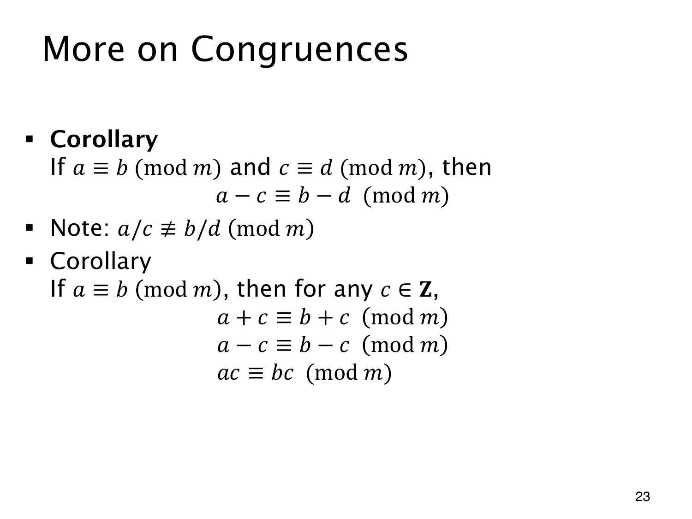

L1.12 · 第 23 页讲解原文
查看这一页课件

同余两边能做哪些相同操作
整数 c 总与自己同余，所以由 a≡b(modm) 可以推出
a+c≡b+c,a−c≡b−c,ac≡bc(modm).
若另有 c≡d(modm)，还可逐项相减，得 a−c≡b−d(modm)。因为
(a−c)−(b−d)=(a−b)−(c−d),
右边是两个 m 的倍数之差，仍被 m 整除。
相除却可能破坏同余。模 6 时，4≡10、2≡2 都成立，但 4/2=2 与 10/2=5 不同余。
原页写 a/c≡b/d(modm)，是在提醒相除推理不普遍成立，不能读成两商在任何情况下都不同余。有些商确实同余；还有些商不是整数，连本节同余关系的定义域都不满足。要进行类似除法的操作，必须另有合适的乘法逆元条件。